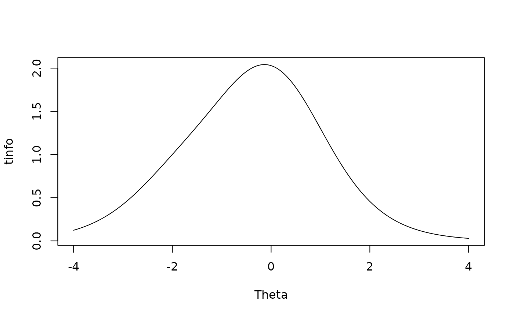

Given an estimated model compute the test information.
Usage
testinfo(
x,
Theta,
degrees = NULL,
group = NULL,
individual = FALSE,
which.items = 1:extract.mirt(x, "nitems")
)Arguments
- x
an object of class 'SingleGroupClass', or an object of class 'MultipleGroupClass' if a suitable
groupinput were supplied- Theta
a matrix of latent trait values
- degrees
a vector of angles in degrees that are between 0 and 90. Only applicable when the input object is multidimensional
- group
group argument to pass to
extract.groupfunction. Required when the input object is a multiple-group model- individual
logical; return a data.frame of information traceline for each item?
- which.items
an integer vector indicating which items to include in the expected information function. Default uses all possible items
References
Chalmers, R., P. (2012). mirt: A Multidimensional Item Response Theory Package for the R Environment. Journal of Statistical Software, 48(6), 1-29. doi:10.18637/jss.v048.i06
Author
Phil Chalmers rphilip.chalmers@gmail.com
Examples
dat <- expand.table(deAyala)
(mirt(dat, 1, '2PL', pars = 'values'))
#> group item class name parnum value lbound ubound est const nconst
#> 1 all Item.1 dich a1 1 0.851 -Inf Inf TRUE none none
#> 2 all Item.1 dich d 2 2.384 -Inf Inf TRUE none none
#> 3 all Item.1 dich g 3 0.000 0 1 FALSE none none
#> 4 all Item.1 dich u 4 1.000 0 1 FALSE none none
#> 5 all Item.2 dich a1 5 0.851 -Inf Inf TRUE none none
#> 6 all Item.2 dich d 6 0.726 -Inf Inf TRUE none none
#> 7 all Item.2 dich g 7 0.000 0 1 FALSE none none
#> 8 all Item.2 dich u 8 1.000 0 1 FALSE none none
#> 9 all Item.3 dich a1 9 0.851 -Inf Inf TRUE none none
#> 10 all Item.3 dich d 10 0.327 -Inf Inf TRUE none none
#> 11 all Item.3 dich g 11 0.000 0 1 FALSE none none
#> 12 all Item.3 dich u 12 1.000 0 1 FALSE none none
#> 13 all Item.4 dich a1 13 0.851 -Inf Inf TRUE none none
#> 14 all Item.4 dich d 14 -0.362 -Inf Inf TRUE none none
#> 15 all Item.4 dich g 15 0.000 0 1 FALSE none none
#> 16 all Item.4 dich u 16 1.000 0 1 FALSE none none
#> 17 all Item.5 dich a1 17 0.851 -Inf Inf TRUE none none
#> 18 all Item.5 dich d 18 -0.563 -Inf Inf TRUE none none
#> 19 all Item.5 dich g 19 0.000 0 1 FALSE none none
#> 20 all Item.5 dich u 20 1.000 0 1 FALSE none none
#> 21 all GROUP GroupPars MEAN_1 21 0.000 -Inf Inf FALSE none none
#> 22 all GROUP GroupPars COV_11 22 1.000 0 Inf FALSE none none
#> prior.type prior_1 prior_2
#> 1 none NaN NaN
#> 2 none NaN NaN
#> 3 none NaN NaN
#> 4 none NaN NaN
#> 5 none NaN NaN
#> 6 none NaN NaN
#> 7 none NaN NaN
#> 8 none NaN NaN
#> 9 none NaN NaN
#> 10 none NaN NaN
#> 11 none NaN NaN
#> 12 none NaN NaN
#> 13 none NaN NaN
#> 14 none NaN NaN
#> 15 none NaN NaN
#> 16 none NaN NaN
#> 17 none NaN NaN
#> 18 none NaN NaN
#> 19 none NaN NaN
#> 20 none NaN NaN
#> 21 none NaN NaN
#> 22 none NaN NaN
mod <- mirt(dat, 1, '2PL', constrain = list(c(1,5,9,13,17)))
#>
Iteration: 1, Log-Lik: -56256.669, Max-Change: 0.23297
Iteration: 2, Log-Lik: -55676.726, Max-Change: 0.15211
Iteration: 3, Log-Lik: -55476.742, Max-Change: 0.08970
Iteration: 4, Log-Lik: -55414.450, Max-Change: 0.05101
Iteration: 5, Log-Lik: -55395.424, Max-Change: 0.02855
Iteration: 6, Log-Lik: -55389.632, Max-Change: 0.01596
Iteration: 7, Log-Lik: -55387.850, Max-Change: 0.00880
Iteration: 8, Log-Lik: -55387.308, Max-Change: 0.00490
Iteration: 9, Log-Lik: -55387.139, Max-Change: 0.00269
Iteration: 10, Log-Lik: -55387.079, Max-Change: 0.00123
Iteration: 11, Log-Lik: -55387.067, Max-Change: 0.00066
Iteration: 12, Log-Lik: -55387.064, Max-Change: 0.00041
Iteration: 13, Log-Lik: -55387.062, Max-Change: 0.00011
Iteration: 14, Log-Lik: -55387.062, Max-Change: 0.00008
Theta <- matrix(seq(-4,4,.01))
tinfo <- testinfo(mod, Theta)
plot(Theta, tinfo, type = 'l')

if (FALSE) { # \dontrun{
# compare information loss between two tests
tinfo_smaller <- testinfo(mod, Theta, which.items = 3:5)
# removed item informations
plot(Theta, iteminfo(extract.item(mod, 1), Theta), type = 'l')
plot(Theta, iteminfo(extract.item(mod, 2), Theta), type = 'l')
# most loss of info around -1 when removing items 1 and 2; expected given item info functions
plot(Theta, tinfo_smaller - tinfo, type = 'l')
} # }